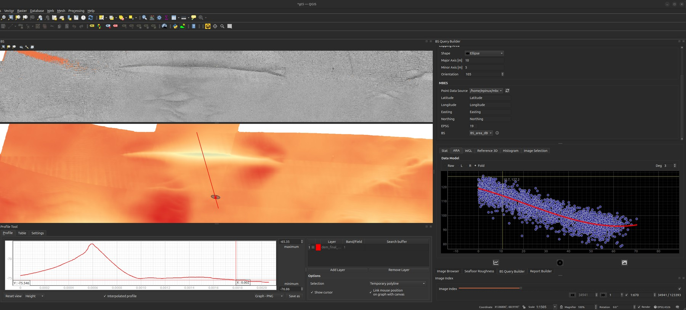
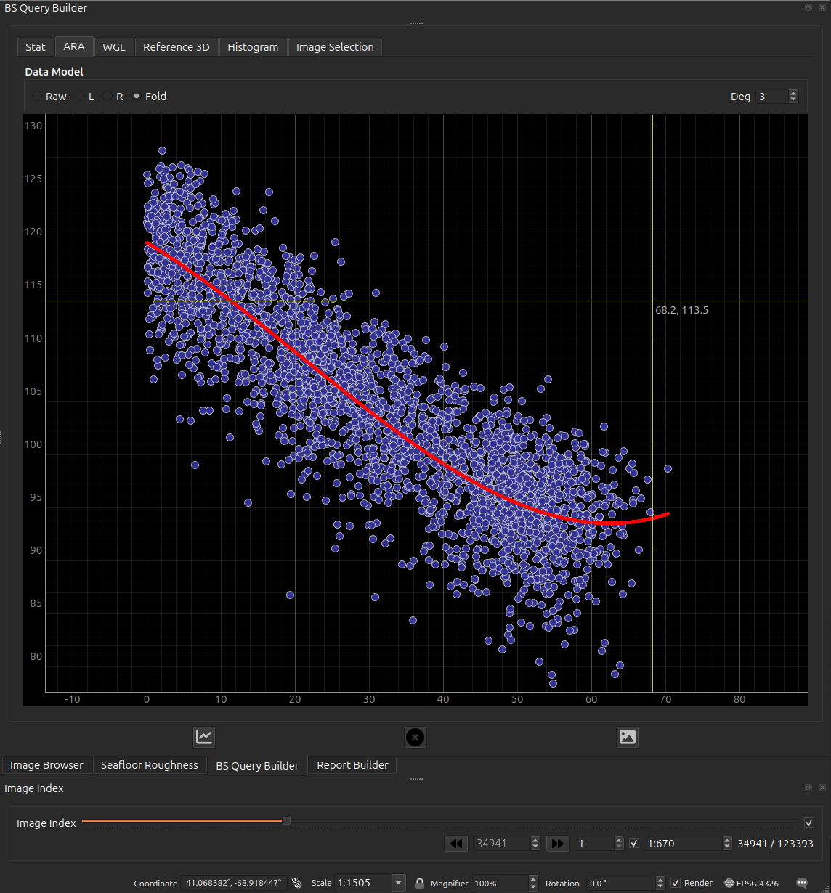
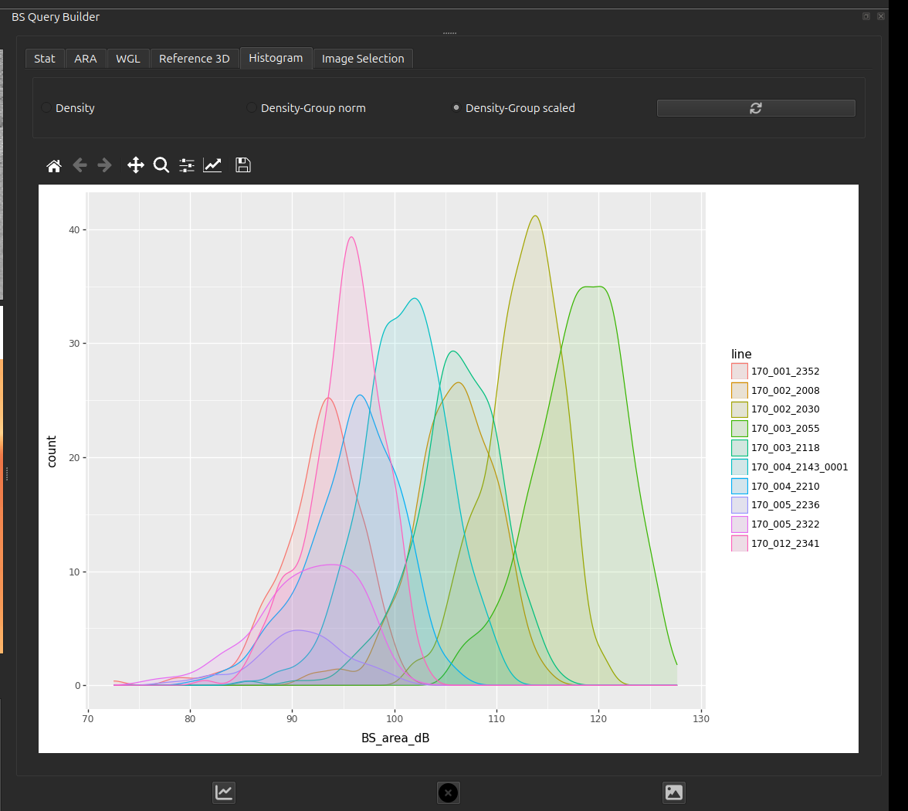

Acoustic Query Builder¶
Interrogate MBES products — backscatter and bathymetric derivatives — under points and sampling shapes, and summarise their distributions. This is where the acoustic side of the "ground-truthing" happens.

What it does¶
- Point query: click the map to read the value(s) of selected GRASS raster
layers (backscatter, slope, geomorphons, …) at that location, via the
GRASS/FastGIS
sampleendpoint (the server reprojects your click as needed). - Spatial selection: draw a sampling shape and select the MBES soundings that
fall inside it. Point-in-polygon testing runs over a soundings Parquet table
with a fast
numba-accelerated routine (with an optional GPU/cuspatialpath). - Distributions: visualise the selected values (e.g. backscatter angular
response / density) with
plotnine/matplotlib, ready to compare against the optical evidence.
The angular response (ARA)¶
The ARA tab is the acoustic read-out of a sampling unit: every selected sounding plotted as backscatter against incidence angle, with a polynomial fit (the Deg spinner sets the degree) through the cloud. The angular response curve — high near nadir, falling and flattening toward grazing — is the shape that carries substrate information, and it is what the roughness metrics are set beside.
The Data Model radios pick which beams contribute:
| Raw | every selected beam, port and starboard together |
| L / R | one side only — use these when the two sides disagree, which is itself diagnostic |
| Fold | the two sides folded onto a common |angle| axis, so port and starboard stack |
Sibling tabs cover the rest of the selection: Stat (summary statistics), Histogram (value distribution), Image Selection (the seafloor frames that fall inside the shape), and the two 3-D views below.

BS_area_dB).The Histogram tab is worth singling out: it splits the selection by survey line, so systematic differences between lines are visible directly.

BS_area_dB per line inside one sampling unit.
Lines offset from one another by several dB over the same seabed is exactly the
per-line variation that has to be normalised away before backscatter can be
compared across a survey.The 3-D surface¶
Two tabs show the selected area in 3-D, and they are not the same product — read this before putting either in a report.
| tab | where the surface comes from |
|---|---|
| WGL | The selected soundings, gridded on the fly. Always available. |
| Reference 3D | The reference_surface GeoTIFF, clipped to the sampling shape. Only when that setting points at a readable, north-up raster. |
WGL needs a large selection to mean anything
The soundings grid is built at a fixed 1.5 nodes per metre across the selection's bounding box, so its resolution is set by how big your selection is, not by how dense the pings are:
| selection extent | grid |
|---|---|
| 250 m | 375 × 375 — a real surface |
| 25 m | 37 × 37 |
| 5 m | 7 × 7 — barely a surface |
| 2 m | 3 × 3 — meaningless |
| under ~0.7 m | empty |
A sampling unit sized for ground-truthing — metres across — therefore produces a handful of nodes, and reading relief off it is not justified. Use WGL for a broad survey-scale selection; for a sampling unit, read the acoustics from the ARA tab and the relief from Reference 3D, which is clipped from the bathymetry raster and keeps its own resolution regardless of how small the shape is.
Both surfaces fill space that has no data
Neither tab distinguishes measured seabed from inferred seabed. The filling is different in each, and in both cases it looks like real relief:
- WGL grids the soundings with nearest-neighbour interpolation over the full bounding box of your selection. Nearest-neighbour has no concept of a data boundary, so the corners of the box — outside the sampling shape, and possibly far from any ping — are filled with the value of the closest sounding. The result is a complete rectangle of "surface" whose edges may be pure extrapolation. The grid is built at a fixed 1.5 nodes per metre regardless of actual sounding density, so where the data is sparser than that the surface is visibly blocky — those flat tiles are one sounding each, not resolved seabed.
- Reference 3D replaces every NoData cell in the clipped window with the median height of that window. A gap in the bathymetry therefore appears as a smooth plate at typical depth, not as a hole.
Read a wide, featureless area in either tab as "no information here" rather than "flat seabed here". Cross-check against the raster itself in the map canvas if it matters.
Reading it quantitatively¶
The Reference 3D tab is the one built for measurement:
- A live cursor read-out of Easting / Northing / Elevation, snapped to the nearest grid sample so the number is a real cell value rather than an interpolated guess at the pointer.
- Click to drop a marker, and a two-point measure tool reporting 3-D distance with its horizontal and vertical components.
- A vertical-exaggeration slider, 1× … 20×, defaulting to 1×. Picking and measuring read the true elevation and are unaffected by it — but everything you see above 1× overstates the relief. Note the VE whenever you show a screenshot.
The WGL tab has none of these: it is a plain surface for orientation, with no read-out, no picking and no exaggeration control.
Resolution and CRS caveats¶
- The clipped reference surface is downsampled so its longer side is at most 300 cells. A large sampling shape is therefore shown much coarser than the source raster — the 3-D view is a preview of the DEM, never a substitute for it.
- Only north-up GeoTIFFs are supported. A rotated raster — such as a georeferenced micro-DEM or mosaic from the Seafloor Roughness tool — is rejected, and the tab falls back to the soundings surface.
- If the raster is geographic (degrees), the horizontal axes are converted to local metres by an equirectangular approximation about the window centre, so that the vertical and horizontal units match. Over a sampling-shape-sized window the error is negligible; it is still an approximation, not a reprojection.
- Any failure to clip — missing file, wrong CRS, no overlap, all-NoData — is
logged to the
GroundTruthermessage-log tab and the tab silently falls back to the soundings surface. If you expected the GeoTIFF, check the log rather than assuming you are looking at it.
Which surface ends up in the report
Report Builder captures the Reference 3D tab when it is showing a surface, and the WGL soundings surface otherwise. The exported image is not labelled with its source, so state in your report text which one it is — and at what vertical exaggeration.
How to use¶
- In the GRASS toolbox, select an environment and choose which raster layers to query.
- Use the point-query map tool to read values at a click, or draw a sampling shape to select soundings within it.
- Review the returned values / plots; results can feed into the Report Builder.
Inputs (Settings → Mbes)¶
| Setting | What it is |
|---|---|
soundings |
MBES soundings table (Parquet) used for spatial selection. |
reference_surface |
Optional GeoTIFF DEM. When set, the 3-D viewer clips this raster to the sampling shape instead of gridding the selected soundings; it falls back to the soundings surface if the file is missing or unreadable. |
Column-by-column — including how the backscatter field is chosen and what the port/starboard/fold beam filter does: MBES soundings.
GRASS raster layers (backscatter, derivatives) live in the active GRASS environment — see the GRASS / FastGIS toolbox.
Column names are configurable
Easting, Northing, Longitude and Latitude are read from editable text
fields in the query builder, so a table using different names works without
any code change. If one of the four is missing, the spatial tools stay
disabled and the missing names are logged to the GroundTruther message-log
tab.